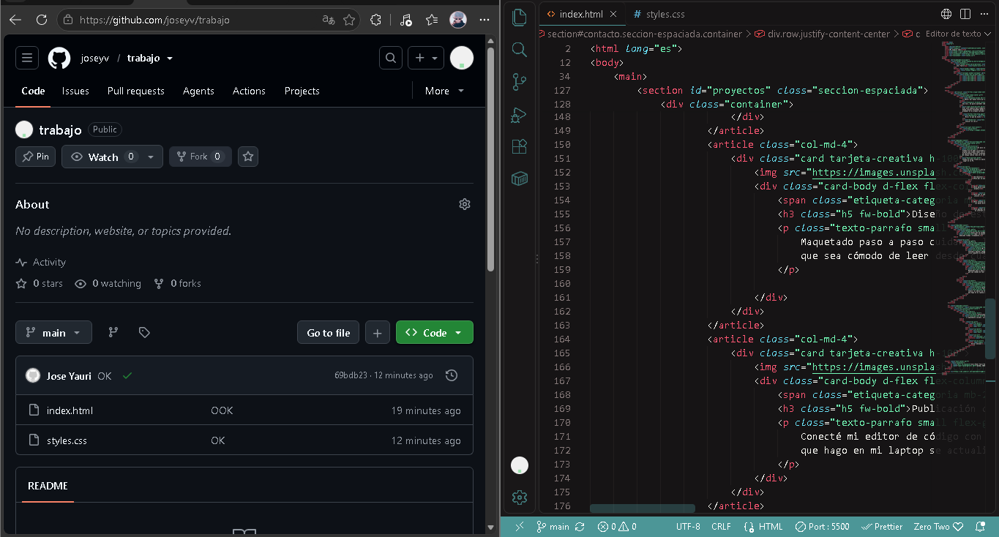

WordPress + XAMPP
Mi primer sitio autoadministrable
Configuré Apache y MySQL en mi propia laptop para levantar un sitio completo en WordPress, personalizando su diseño y estructura.
Armé este espacio para compartir un poco de lo que vengo construyendo: desde páginas diseñadas desde cero con código hasta sitios administrables probados en mi propio servidor local.

Siempre me ha dado curiosidad saber cómo funcionan las aplicaciones y páginas que usamos todos los días. Por eso me metí al mundo de la programación: me entretiene resolver problemas, armar diseños limpios y ver cómo unas líneas de código cobran vida en el navegador.
Cuando no estoy frente al editor de código, disfruto escuchar buena música, jugar en la PC.
| Herramienta | Para qué la uso en mi día a día |
|---|---|
| HTML5 y CSS3 | Para darle orden, estructura y mi propio estilo visual a cada página. |
| Bootstrap 5 | Para que la web se adapte bien tanto en una laptop como en el celular. |
| XAMPP y WordPress | Para levantar mi servidor en casa y armar páginas autoadministrables con bases de datos. |
| Git y GitHub | Para guardar mis avances desde VS Code y publicar mis proyectos en internet. |
Aquí te muestro algunos de los proyectos a los que les he dedicado tiempo últimamente.
Configuré Apache y MySQL en mi propia laptop para levantar un sitio completo en WordPress, personalizando su diseño y estructura.
 HTML5 + CSS3 + Bootstrap
HTML5 + CSS3 + Bootstrap
Maquetado paso a paso cuidando los colores, márgenes y tipografías para que sea cómodo de leer desde cualquier pantalla.

Conecté mi editor de código con mi cuenta de GitHub para que cada mejora que hago en mi laptop se actualice en línea en segundos.
Si quieres dejarme algún comentario, sugerencia o simplemente saludar, escríbeme por aquí.